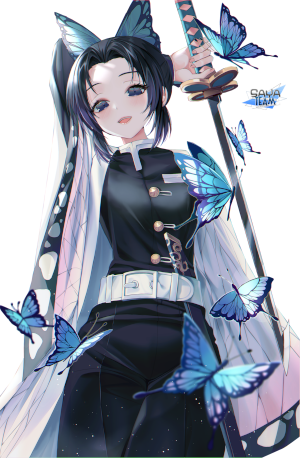
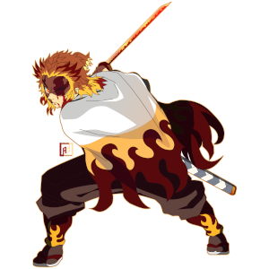
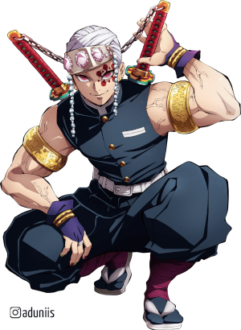
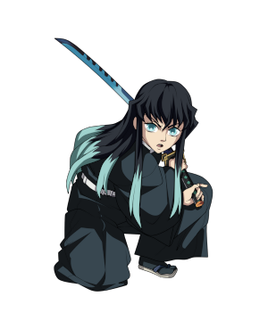
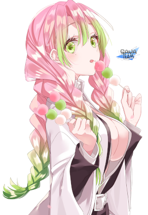
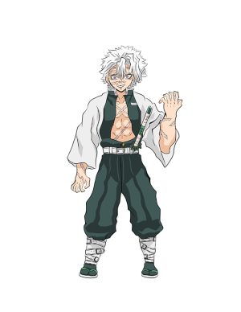
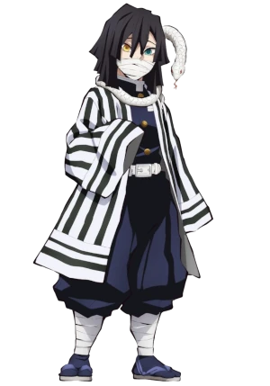
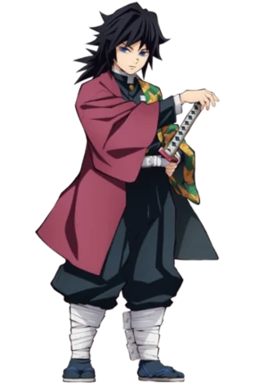
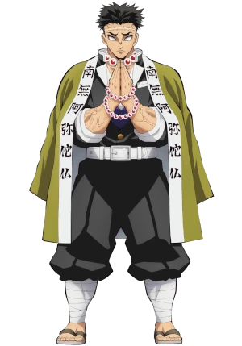

Hachira dos Insetos
Chinobu Kocho
Shinobu Kocho🔗 é uma Caçadora de Demônios do Corpo de Caçadores de Demônios e a atual Hashira do Inseto. Shinobu Kocho também é a irmã mais nova de Kanae Kocho junto com sua irmã adotiva mais nova, Kanao Tsuyuri.
Hashira das Chamas
Rengoku Kyojuro
Kyojuro Rengoku🔗 é um dos principais personagens coadjuvantes de Demon Slayer: Kimetsu no Yaiba, e um dos principais personagens do Mugen Train Arc. Ele é um Demon Slayer do Demon Slayer Corpse Flame Hashira.
Hachira do Som
Uzui Tengen
Uzui Tengen🔗 é um Caçador de Demônios, sendo o atual Pilar da Som do Corpo de Extermínio de Demônios. Antes de se tornar um caçador de demônios, ele agiu como um shinobi devido a sua familia de shinobis.
Hachira da Névoa
Tokito Muichiro
Muichiro Tokito🔗 é um dos personagens que detém acesso a técnica Mundo Transparente, que garante ao seu usuário, visualizar as articulações, os músculos e o fluxo sanguíneo de seu oponente, conseguindo prever com precisão os ataques e movimentos de seus inimigos.
Hachira do Amor
Mitsuri Kanroji
Mitsuri Kanroji🔗 é uma personagem do popular anime e mangá "Demon Slayer: Kimetsu no Yaiba". Ela é uma poderosa caçadora de demônios com a habilidade de sentir emoções através do olfato.
Hachira do Vento
Sanemi Shinazugawa
Sanemi Shinazugawa🔗 é um homem alto, musculoso e esbelto, com cabelos espetados e olhos grandes. Seu rosto e corpo estão cobertos de cicatrizes acumuladas durante seus muitos anos de luta contra demônios.
Hachira da Serpente
Obanai Iguro
Obanai Iguro🔗 é um personagem coadjuvante na série de mangá Demon Slayer: Kimetsu No Yaiba, bem como sua adaptação para anime. Obanai era um Caçador de Oni e o Hashira da Serpente do Esquadrão de Caçadores de Onis, estando entre os poderosos Hashira.
Hachira da Água
Giyu Tomioka
Giyuu Tomioka🔗 é um Caçador de Demônios e o atual Pilar da Água. Ele aparece no primeiro capítulo para matar Nezuko por ela ser um demônio, mas pela insistência de Tanjiro ele a poupou contato que o mesmo se torna-se um Caçador de Demônios.
Hachira da Pedra
Gyomei Himejima
Gyomei Himejima🔗 o arquétipo gigante gentil, sendo surpreendentemente de fala mansa e sensível, apesar de sua aparência intimidadora. Ele também se mostra bastante piedoso, carregando suas contas de oração em todos os momentos e fazendo orações em situações pungentes.